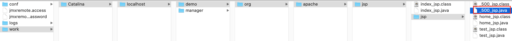

内置对象
JSP内置对象是指在JSP页面中不需要创建，直接可以使用的对象，一共有9个，为了清晰的了解底层的原理, 可以看下Tomcat把jsp翻译成的java文件，先写一个JSP页面：
/jsp/500.jsp
<%@ page contentType="text/html;charset=UTF-8" language="java" %>
<%@ page isErrorPage="true" %>
<html>
<head>
<title>Title</title>
</head>
<body>
<h1>服务器正忙...</h1>
<%
// 由于使用了isErrorPage="true"，因此可以使用内置对象exception
String message = exception.getMessage();
// out: JSP内置对象，JspWriter类型
out.print(message);
%>
</body>
</html>
然后运行，可以通过IDEA的Log, 找到CATALINA_BASE 目录， CATALINA_BASE: /Users/daliu/Library/Caches/IntelliJIdea2019.3/tomcat/MyDemo 然后进入 /MyDemo/work/Catalina/localhost/demo/org/apache/jsp/

这是它的源代码：
/*
* Generated by the Jasper component of Apache Tomcat
* Version: Apache Tomcat/9.0.27
* Generated at: 2020-01-14 10:04:55 UTC
* Note: The last modified time of this file was set to
* the last modified time of the source file after
* generation to assist with modification tracking.
*/
package org.apache.jsp.jsp;
import javax.servlet.*;
import javax.servlet.http.*;
import javax.servlet.jsp.*;
public final class _500_jsp extends org.apache.jasper.runtime.HttpJspBase
implements org.apache.jasper.runtime.JspSourceDependent,
org.apache.jasper.runtime.JspSourceImports {
private static final javax.servlet.jsp.JspFactory _jspxFactory =
javax.servlet.jsp.JspFactory.getDefaultFactory();
private static java.util.Map<java.lang.String,java.lang.Long> _jspx_dependants;
private static final java.util.Set<java.lang.String> _jspx_imports_packages;
private static final java.util.Set<java.lang.String> _jspx_imports_classes;
static {
_jspx_imports_packages = new java.util.HashSet<>();
_jspx_imports_packages.add("javax.servlet");
_jspx_imports_packages.add("javax.servlet.http");
_jspx_imports_packages.add("javax.servlet.jsp");
_jspx_imports_classes = null;
}
private volatile javax.el.ExpressionFactory _el_expressionfactory;
private volatile org.apache.tomcat.InstanceManager _jsp_instancemanager;
public java.util.Map<java.lang.String,java.lang.Long> getDependants() {
return _jspx_dependants;
}
public java.util.Set<java.lang.String> getPackageImports() {
return _jspx_imports_packages;
}
public java.util.Set<java.lang.String> getClassImports() {
return _jspx_imports_classes;
}
public javax.el.ExpressionFactory _jsp_getExpressionFactory() {
if (_el_expressionfactory == null) {
synchronized (this) {
if (_el_expressionfactory == null) {
_el_expressionfactory = _jspxFactory.getJspApplicationContext(getServletConfig().getServletContext()).getExpressionFactory();
}
}
}
return _el_expressionfactory;
}
public org.apache.tomcat.InstanceManager _jsp_getInstanceManager() {
if (_jsp_instancemanager == null) {
synchronized (this) {
if (_jsp_instancemanager == null) {
_jsp_instancemanager = org.apache.jasper.runtime.InstanceManagerFactory.getInstanceManager(getServletConfig());
}
}
}
return _jsp_instancemanager;
}
public void _jspInit() {
}
public void _jspDestroy() {
}
// !!! request
// !!! response
public void _jspService(final javax.servlet.http.HttpServletRequest request, final javax.servlet.http.HttpServletResponse response)
throws java.io.IOException, javax.servlet.ServletException {
// !!! pageContext
final javax.servlet.jsp.PageContext pageContext;
// !!! session
javax.servlet.http.HttpSession session = null;
// !!! exception
java.lang.Throwable exception = org.apache.jasper.runtime.JspRuntimeLibrary.getThrowable(request);
if (exception != null) {
response.setStatus(javax.servlet.http.HttpServletResponse.SC_INTERNAL_SERVER_ERROR);
}
// !!! application
final javax.servlet.ServletContext application;
// !!! config
final javax.servlet.ServletConfig config;
// !!! out
javax.servlet.jsp.JspWriter out = null;
// !!! page
final java.lang.Object page = this;
javax.servlet.jsp.JspWriter _jspx_out = null;
javax.servlet.jsp.PageContext _jspx_page_context = null;
try {
response.setContentType("text/html;charset=UTF-8");
pageContext = _jspxFactory.getPageContext(this, request, response,
null, true, 8192, true);
_jspx_page_context = pageContext;
application = pageContext.getServletContext();
config = pageContext.getServletConfig();
session = pageContext.getSession();
out = pageContext.getOut();
_jspx_out = out;
out.write("\n");
out.write("\n");
out.write("<html>\n");
out.write("<head>\n");
out.write(" <title>Title</title>\n");
out.write("</head>\n");
out.write("<body>\n");
out.write(" <h1>服务器正忙...</h1>\n");
out.write(" ");
// 由于使用了isErrorPage="true"，因此可以使用内置对象exception
String message = exception.getMessage();
// out: JSP内置对象，JspWriter类型
out.print(message);
out.write("\n");
out.write("</body>\n");
out.write("</html>\n");
} catch (java.lang.Throwable t) {
if (!(t instanceof javax.servlet.jsp.SkipPageException)){
out = _jspx_out;
if (out != null && out.getBufferSize() != 0)
try {
if (response.isCommitted()) {
out.flush();
} else {
out.clearBuffer();
}
} catch (java.io.IOException e) {}
if (_jspx_page_context != null) _jspx_page_context.handlePageException(t);
else throw new ServletException(t);
}
} finally {
_jspxFactory.releasePageContext(_jspx_page_context);
}
}
}
上面我们使用了// !!!标识这9个对象，可见：
| 对象名 | 类型 | 含义 |
|---|---|---|
| pageContext | PageContext | 域对象，当前页面共享数据 |
| request | HttpServletRequest | 域对象, 一次请求访问的多个资源(转发forward也是同一个) |
| session | HttpSession | 域对象，一次会话的多个请求 |
| application | ServletContext | 域对象，应用程序, 多个用户共享, 唯一 |
| response | HttpServletResponse | 响应对象 |
| page | Object (this) | 当前页面Servlet对象，即this |
| out | JspWriter | 输出对象 |
| config | ServletConfig | 配置对象 |
| exception | Throwable | JSP中配置了isErrorPage=true就存在此对象 |
其中前4个是JSP页面中的域对象
pageContext
域对象，当前页面共享数据, 出了当前JSP页面，不可使用.
通过pageContext还可以获取其他8个内置对象
- pageContext.getPage() --> page
- pageContext.getRequest() --> request
- pageContext.getResponse() --> response
- pageContext.getServletContext() --> application
- pageContext.getServletConfig() --> config
- pageContext.getSession() --> session
- pageContext.getException() --> exception
- pageContext.getOut() --> out
示例：
<body>
<h1>Hello world!</h1>
<%
pageContext.setAttribute("msg", "大刘测试");
%>
<%= pageContext.getAttribute("msg") %>
</body>
request 域对象，一次请求访问的多个资源，比如使用了转发，服务器内部跳转，就可以访问多个资源
session
域对象，一次会话的多个请求
application
域对象，针对App内，所有用户间共享数据
out JspWriter输出对象, 注: 通过内置对象out的输出, 定义在位置和输出位置一致, 而response.getWriter().write输出位置总是在out.write输出之前, 这是Tomcat的机制决定的, Tomcat给client响应时会先去找response输出缓冲区中的数据, 然后才会找out缓冲区数据; 因此在JSP中, 不建议使用response.getWriter()进行输出, 而是直接使用out对象